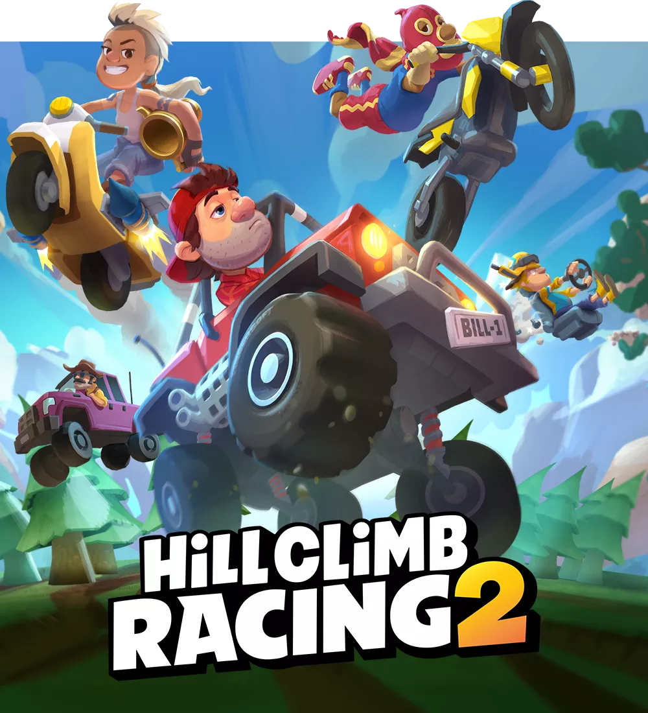
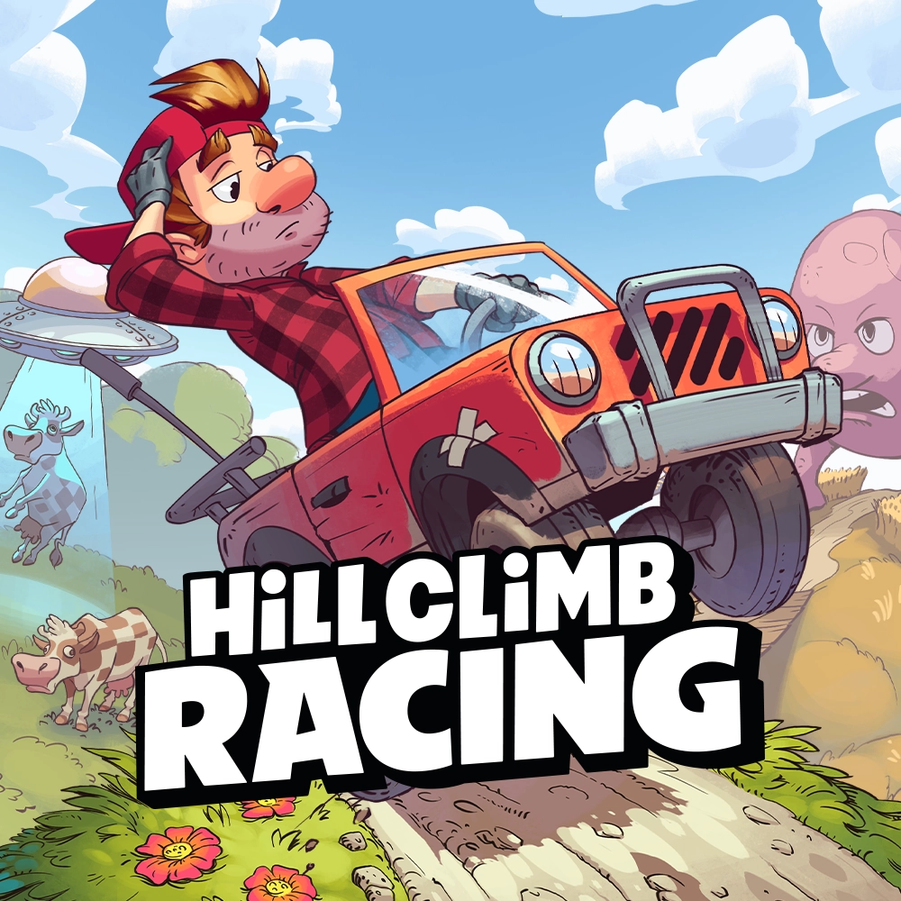
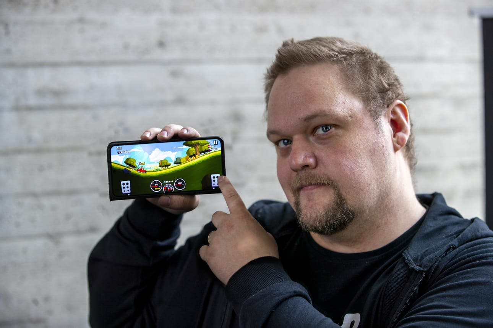

Hill Climb Racing is a 2D physics-based racing game released in 2012 by Finnish studio Fingersoft. Created by Toni Fingerroos, it's the company's most successful game. Players control a driver, Bill Newton, navigating hilly terrains while collecting coins and diamonds to upgrade vehicles. They must manage fuel and avoid crashes.
The company's (Fingersoft) motto is:Good Games, Great People

The game received mixed reviews—critics found the graphics basic and gameplay unimpressive but praised the simple controls and fair monetization. Its success led to a sequel, Hill Climb Racing 2 (2016). By 2018, the series became the second Finnish mobile game franchise to hit 1 billion downloads, now surpassing 2 billion downloads worldwide.

In Hill Climb Racing, the goal is to drive as far as possible through increasingly difficult stages while collecting coins. Players use Gas and Brake pedals to control movement and rotation in mid-air. Fuel is replenished by picking up gas canisters or batteries. Performing stunts like flips earns extra coins, which can be spent on vehicle upgrades or unlocking new vehicles such as a monster truck, dirt bike, or even Santa's sleigh.
The game ends if the player runs out of fuel or the driver crashes. Over time, updates have added new content, including a Garage for tuning cars, Gems as a currency, and more than 30 vehicles and various stages. In 2024, a new Fingersports mode introduced Olympic-style car races.

Hill Climb Racing was developed by Toni Fingerroos, a self-taught Finnish programmer who started coding at age 10. He had a passion for racing games and founded Fingersoft as a hobby. After struggling with various failed ventures—including a canceled PlayStation 3 game and selling imported sports cars—he returned to software development in 2011.
One of his early successes was Cartoon Camera (2012), an app that gained 10 million downloads, helping him pay off debts and fund his next project. Fingerroos then spent 16-hour days for months developing Hill Climb Racing in his bedroom. The game's simple, cartoonish visuals were intentionally designed to be "naïve and childish," with its main character, Bill Newton, based on a sketch by Fingerroos' partner.
The game launched for Android on September 22, 2012, followed by iOS on November 8, Windows on October 21, 2013, and Windows Phone on November 27, 2013.